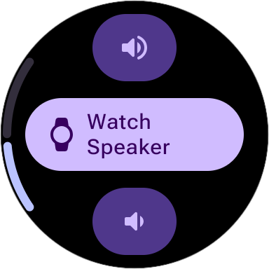

Audio UI Material 3 Library¶
This library contains a set of high-quality, battery-efficient Wear OS Jetpack Compose components and screens for audio and volume management, fully built on top of Wear Compose Material 3.
It includes: * Volume Screen: A complete screen for adjusting volume using a stepper or the physical bezel/crown, showing the current audio output (e.g., headphones, watch speaker). * Rotary Volume Controls: Utilities to seamlessly bind volume adjustment to physical rotary scroll inputs (bezel/crown rotation). * Volume Level Indicator: A modern, curved visual arc indicator that wraps around the edge of the circular watch face to show the current volume level.
Volume Screen¶
The library provides a highly optimized VolumeScreen with a standard Material 3 stepper design. It allows users to increase or decrease the audio stream volume using either the on-screen stepper buttons or the physical rotary bezel/crown. It also displays a central button showing the active audio output device (e.g., Bluetooth headphones) and prompts the user to switch or connect devices when clicked.
Like other Horologist components, the screen comes in both stateful and stateless versions.
1. Stateful VolumeScreen (Recommended)¶
The stateful version is the easiest way to integrate volume management into your application. It automatically wires up the VolumeViewModel, manages audio stream states, handles Bluetooth output switching, and binds to physical rotary scroll inputs internally without requiring any boilerplate code.
import com.google.android.horologist.audio.ui.material3.VolumeScreen
@Composable
fun MyVolumeScreen() {
// Zero-boilerplate integration
VolumeScreen()
}
2. Stateless VolumeScreen (Custom State)¶
If you want to manage the volume state or audio outputs yourself, you can use the stateless version. It accepts raw state values and event lambdas for full customizability.
With a Device Output Button (Standard):¶
import com.google.android.horologist.audio.ui.material3.VolumeScreen
import com.google.android.horologist.audio.ui.material3.components.AudioOutputUi
@Composable
fun MyStatelessVolumeScreen(
volumeUiState: VolumeUiState,
activeOutput: AudioOutputUi,
onVolumeIncrease: () -> Unit,
onVolumeDecrease: () -> Unit,
onOutputDeviceClick: () -> Unit
) {
VolumeScreen(
volume = { volumeUiState },
audioOutputUi = activeOutput,
increaseVolume = onVolumeIncrease,
decreaseVolume = onVolumeDecrease,
onAudioOutputClick = onOutputDeviceClick,
)
}
With a Simple Text Label:¶
If you do not want to show the active audio output device in the center, you can use VolumeWithDefaultLabel which displays a simple text label:
import com.google.android.horologist.audio.ui.material3.VolumeWithDefaultLabel
@Composable
fun MySimpleVolumeScreen(
volumeUiState: VolumeUiState,
onVolumeIncrease: () -> Unit,
onVolumeDecrease: () -> Unit
) {
VolumeWithDefaultLabel(
volume = { volumeUiState },
increaseVolume = onVolumeIncrease,
decreaseVolume = onVolumeDecrease,
)
}

Rotary Bezel & Crown Integration¶
Material 3 Volume components natively support Wear OS Rotary Inputs. When using the stateful VolumeScreen, rotary scrolling is handled automatically.
If you are building a custom screen, you can easily bind rotary bezel or crown rotation to volume adjustments by applying the volumeRotaryBehavior and rotaryScrollable modifiers:
Volume Level Indicator¶
To display the volume level visually without cluttering the center of the watch face, you can use the VolumeLevelIndicator. This component renders a modern, Material 3 curved arc indicator along the outer edge of the screen, which appears when the volume changes and fades out afterwards.
When using the stateful VolumeScreen the VolumeLevelIndicator is added automatically.
Dependency Download¶
To use the Material 3 Audio UI library in your project, add the following dependency to your module's build.gradle file:
repositories {
mavenCentral()
}
dependencies {
implementation "com.google.android.horologist:horologist-audio-ui-material3:<version>"
}